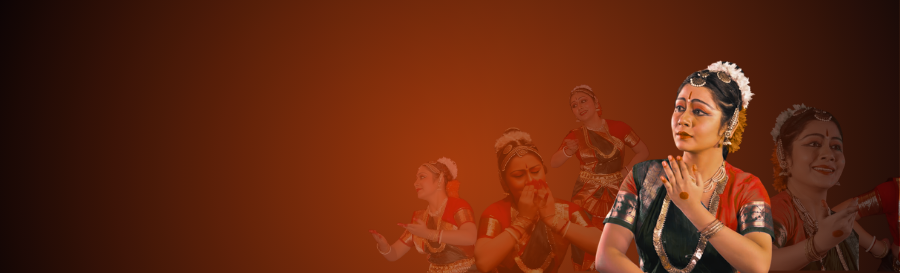

Lecture demonstration and performance.
Performances at Old World Hospitality Ltd., Habitat World, Gurgaon.
7th episode programme of Banichakra, Kolkata "Angika-Sadhana"
Featured in a VCD on the basics of Bharatnatyam, conceptualized by Guru K.N. Barman.
Performed on 29-02-04 to celebrate the Centenary Birth Anniversary of Guru Mother Late Smt. Rukmini Devi Arundale.
Ganesh Gouri FestivalOrganized by the Karnataka Association.